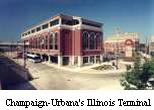

Regional Transit: Main Page (1)
Regional Governance and Finance
- Transit supporters worry budget change makes future cuts more likely - Jun 17, 2023
- Transportation Budget and Governance Structure in the Madison Metropolitan Area - August 24, 2015
- 2015 Assembly Bill 301 Allows a city, village, or town to impose a sales and use tax of 1.5 percent. The city, village, or town must use the tax revenue for transportation purposes. The bill also lowers the state sales tax from 5 to 3 percent and requires that the tax collected on the sale of gasoline and diesel be deposited into the transportation fund.
Need for a Regional Transit System with Express or Rapid Buses
- Better Transit Redux: Buses on the Beltline - Nov. 25, 2023
- CityLab University: Induced Demand - Sept. 6, 2018
- 2 Reasons Why The American Approach To Congestion is Totally Wrong - June 26, 2018
- Madison360: On RTA, leaders choose to fight another day - Feb. 18, 2011
- Dane County RTA won't propose sales-tax increase - Feb. 17, 2011
- Draft Plan for Transit for Hearing - Jan. 18, 2011
- County Board passes RTA proposal after passionate debate - Nov. 5, 2009
- County Board to vote on controversial regional transit authority - Nov. 4, 2009
- 'Bus rapid transit' a commuter rail alternative - Oct. 6, 2009
- Kansas City's MAX Rapid Bus (video)
- Washington State's SWIFT Rapid Transit (video)
- City may look at new bus system - Oct. 2, 2009
- Enough to drive you crazy: Is Madison making the right choices on transit? - July 2, 2009
- Why a Bus-Centered System Will Best Serve U.S. Cities - April, 2009
- RTA, not trains, is the pressing issue - April 14, 2008
- Bus Advocates Say It’s Time to Give Mass Transit a Real Chance - Oct. 4, 2007
- Madison Mayor Suggests Rapid Bus Network - Aug. 26, 2007
- BRT Concepts - July 24, 2007
- County needs to expand bus service - August 22, 2007
- Inadequate Bus Service Between Cities Here Surprises Stoughton Resident From Kosovo - May 19, 2007
- Group Pushes Rail System, Bus Expansion - Oct. 6, 2006
- Public transit to outskirts needed for fewer villagers on roads Sept. 20, 2006
- Will Suburbanites Ride the Bus? Sept. 25, 2006
- Metro Service Might Reach More People - Sept. 7, 2006
- Residents Question Need For Commuter Rail - April 27, 2006
- County transit planning revs up April 15, 2006
- Metro on the march Feb. 23, 2006
- Transport 2020 Bus Rapid Transit: A Cost Benefit Analysis - 2006
- Area Transit Authority With Taxing Power On Horizon (1) Feb. 22, 2006
- Area Transit Authority With Taxing Power On Horizon (2) Feb. 23, 2006
- Transit insights from Denver Feb. 3, 2006
- Metro Shapes Its Strategic Plan For 2006 Jan. 10, 2006
Opinion on a Need for a Madison Area Regional Transit Authority
- Let's get new RTA bill done - July 6, 2011
- Larry Kaufmann: Hooray for ditching Dane County RTA - May 10, 2011
- Bruce B. Wilson: RTA supports area transport needs - May 9, 2011
- Kara Gleason: Expanding bus service is a good way to go - Feb. 3, 2011
- Let locals keep their RTAs, WSJ Editorial - Feb. 2, 2011
- Dorothy Borchardt: RTA should be repealed and redone correctly - Feb. 2, 2011
- Plain Talk: RTA right on with plan for adding buses - Jan. 20, 2011
- Bruce B. Wilson: RTA plan merits citizen support - Jan. 18, 2011
- Real issue with RTA is nonelected appointees having power to tax - August 16, 2010
- Keep options open with an RTA - Nov.5, 2009
- Bruce B. Wilson: RTA subject to many checks and balances - Nov. 4, 2009
- Towns need say on RTA - Sept 15. 2009
- An RTA Should Improve and Expand the Bus System First - Aug. 2009
- Need for clarity in county RTA plans - April 13, 2009
- Misconceptions Not Addressed by Wagner and Blaska - April 2, 2009
- Misconceptions cloud debate over regional transit in Dane County - March 31, 2009
- Need for Regional Transit Authority that Prioritizes Bus Transit - April 15, 2008
- Bus transit upgrades make more sense - August 22, 2007
- Don't Forget Buses In Working To Improve Transit System - Dec. 30, 2006
A Downtown Multi-Modal Terminal?
More on the Intercity Bus Terminal
- Madison needs an Amtrak station -- Richard Sleder - Nov. 18, 2016
- There's still a chance we'll see a new Madison bus depot - Jan. 17, 2013
- Downtown bus terminal a necessity in Madison - Aug. 18, 2012
- Need philanthropists to build a bus terminal - Aug. 15, 2012
- Apartments, retail space to replace Badger Bus depot - July 8, 2009
- Some think Badger Bus plan to close West Wash depot is shortsighted - April 10, 2009
More on the Intercity Bus Terminal
MABA's Position on RTA - Aug. 2007
More on Regional Transit